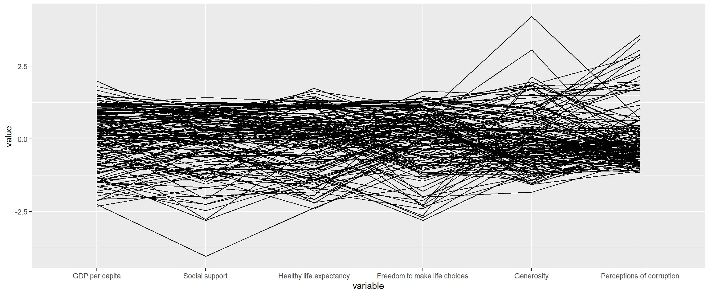
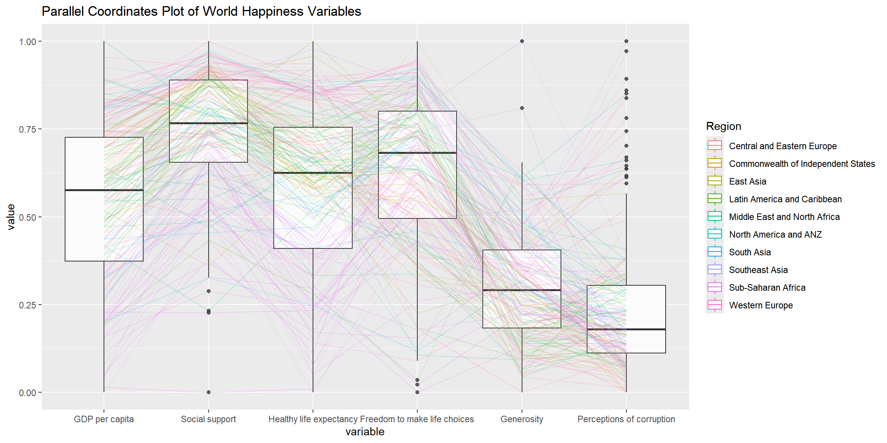
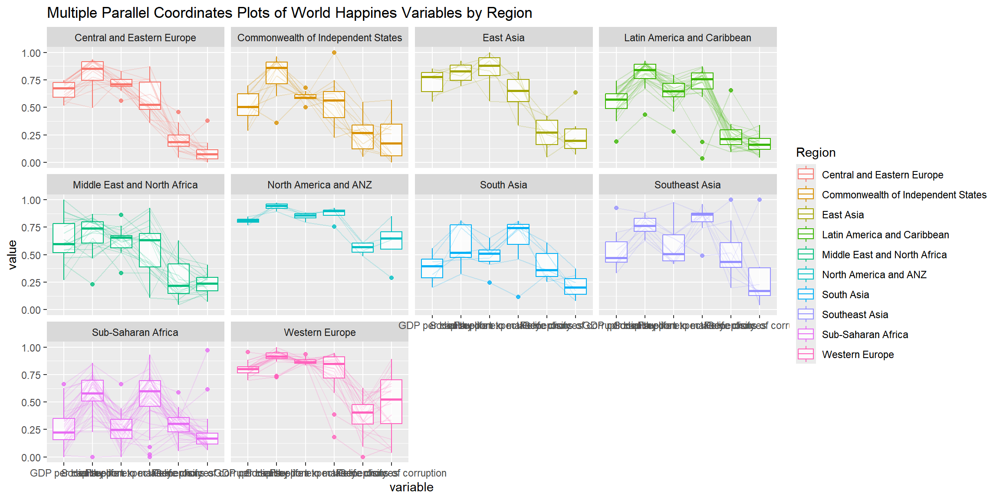
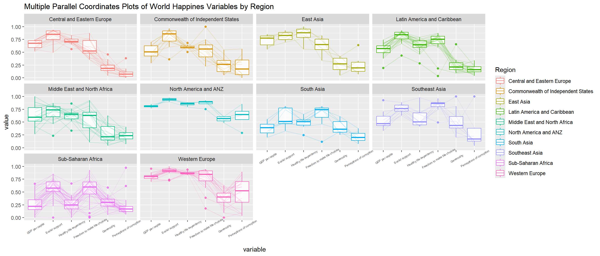
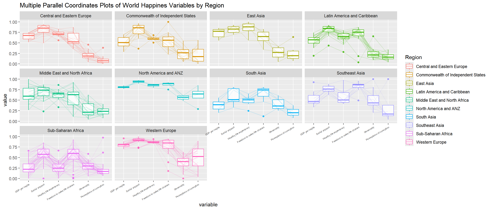

pacman::p_load(parallelPlot, GGally,tidyverse)05-4 Visual Multivariate Analysis with Parallel Coordinates Plot
1 Overview
Parallel coordinates plots are designed for visualising and analysing multivariate numerical data. They allow multiple variables to be compared at once and help reveal relationships, such as factors contributing to a Happiness Index. The technique was introduced by Alfred Inselberg in the 1970s and is more common in academic and scientific settings than business reporting. As Stephen Few (2006) notes, parallel coordinates are most effective as an interactive exploration tool for uncovering multivariate patterns.
We will learn how to create static parallel coordinates plots using ggparcoord() from GGally, and interactive parallel coordinates plots using the parallelPlot package.
2 Installing and Loading the Required Libraries
There are 3 packages that will be used in this exercise.
| Package | Description |
|---|---|
| tidyverse | A collection of R packages for data importing, cleaning, transformation, and visualisation (e.g., readr, dplyr, tidyr, ggplot2). |
| GGally | A ggplot2 extension for tidy and simplified multivariate visualisation |
| parallelPlot | Creates interactive parallel coordinates plots. |
The code below installs and loads the required packages into R environment.
3 Data Preparation
3.1 The Data
In this hands on exercise, the World Happiness 2018 Report is used and downloaded from here. The original excel file is converted and saved as csv file and named WHData-2018.csv.
3.2 Importing the Data
The code below uses read_csv() from readr package to import the dataset into R environment It contains 156 observations.
wh <- read_csv("data/WHData-2018.csv")The preview table displays the first six records of the dataset. It contains 12 columns, where Country, Region are categorical variables, while the remaining columns are numeric variables of type double that describe Happiness score, such as GDP per capita, Dystopia, Social support, and Healthy life expectancy.
| Country | Region | Happiness score | Whisker-high | Whisker-low | Dystopia | GDP per capita | Social support | Healthy life expectancy | Freedom to make life choices | Generosity | Perceptions of corruption |
|---|---|---|---|---|---|---|---|---|---|---|---|
| Albania | Central and Eastern Europe | 4.586 | 4.695 | 4.477 | 1.462 | 0.916 | 0.817 | 0.790 | 0.419 | 0.149 | 0.032 |
| Bosnia and Herzegovina | Central and Eastern Europe | 5.129 | 5.224 | 5.035 | 1.883 | 0.915 | 1.078 | 0.758 | 0.280 | 0.216 | 0.000 |
| Bulgaria | Central and Eastern Europe | 4.933 | 5.022 | 4.844 | 1.219 | 1.054 | 1.515 | 0.712 | 0.359 | 0.064 | 0.009 |
| Croatia | Central and Eastern Europe | 5.321 | 5.398 | 5.244 | 1.769 | 1.115 | 1.161 | 0.737 | 0.380 | 0.120 | 0.039 |
| Czech Republic | Central and Eastern Europe | 6.711 | 6.783 | 6.639 | 2.494 | 1.233 | 1.489 | 0.854 | 0.543 | 0.064 | 0.034 |
| Estonia | Central and Eastern Europe | 5.739 | 5.815 | 5.663 | 1.457 | 1.200 | 1.532 | 0.737 | 0.553 | 0.086 | 0.174 |
4 Plotting Static Parallel Coordinates Plot
ggparcoord() from GGally package is used to create static arallel coordinates plot.
4.1 Key Arguments
data: the data.frame to plot.columns: which variables (names or indices) become the parallel axes.groupColumn: a variable (e.g. region) to colour (group) the lines by.scale: how to scale variables (e.g.,"std","uniminmax"(min 0, max 1),"globalminmax","robust").scaleSummary: summary statistic used when centring (scale = "center").centerObsID: observation to centre on whenscale = "centerObs".missing: how to handle missing values ("exclude","random", etc.).order: how to order the axes (can be a custom order or methods like"anyClass").showPoints: if TRUE, adds points at each variable value.splineFactor: whether to smooth lines using splines.alphaLines: transparency (or a column name for per-line alpha) for the lines ( 0 -1).boxplot/shadeBox: show boxplots or shaded ranges under each axis (TRUE or FALSE).mapping: additionalggplot2::aes()mappings passed to the plot.title: plot title.
The code below creates a basic static parrallel coordinators plot based on columns 7 to 12.
ggparcoord(data = wh, columns = c(7:12))
The basic parallel coordinates plot did not provide a meaningful interpretation of the World Happiness indicators. Next we improve the plot but adding a range of arguments available in ggparcoord().
wh$Region <- as.factor(wh$Region)ggparcoord(data = wh, columns = c(7:12),
groupColumn = "Region", # Use the column name instead of index
scale = "uniminmax",
alphaLines = 0.2,
boxplot = TRUE,
title = "Parallel Coordinates Plot of World Happiness Variables")
Since ggparcoord() extends ggplot2, we can combine it with ggplot2 functions when creating parallel coordinates plots.
In the code chunk below, facet_wrap() is used to produce 10 small-multiple parallel coordinates plots, with each panel representing one geographical region (for example, East Asia). One aesthetic issue with the current design is that some variable names overlap on the x-axis.
ggparcoord(data = wh,
columns = c(7:12),
groupColumn = 2,
scale = "uniminmax",
alphaLines = 0.2,
boxplot = TRUE,
title = "Multiple Parallel Coordinates Plots of World Happines Variables by Region") +
facet_wrap(~ Region)
we use theme() function from ggplot2 to retate the axis text labels by 30 degrees to make it easy to read.
ggparcoord(data = wh,
columns = c(7:12),
groupColumn = 2,
scale = "uniminmax",
alphaLines = 0.2,
boxplot = TRUE,
title = "Multiple Parallel Coordinates Plots of World Happines Variables by Region") +
facet_wrap(~ Region)+
theme(axis.text.x = element_text(angle = 30, vjust = 0.8, size = 5))
4.1.1 Note
To rotate the x-axis text labels, use the
axis.text.xargument in thetheme()function, and specifyelement_text(angle = 30)to rotate the x-axis labels by 30 degrees. we can also contronl the y-axis usingaxis.text.y.hjust(left 0, centre 0.5, right 1) andvjust(bottom 0, centre 0.5, top 1) control text alignment relative to its position, and they are especially useful after rotating axis labels.We can also control the axis text
sizeusingaxis.text.xandaxis.text.yintheme().
Rotating the x-axis text labels to 30 degrees causes them to overlap with the plot area. This can be avoided by adjusting the text position using the hjust argument in element_text() within the theme() function. Since we are modifying the appearance of the x-axis labels, we use axis.text.x.
ggparcoord(data = wh,
columns = c(7:12),
groupColumn = 2,
scale = "uniminmax",
alphaLines = 0.2,
boxplot = TRUE,
title = "Multiple Parallel Coordinates Plots of World Happines Variables by Region") +
facet_wrap(~ Region)+
theme(axis.text.x = element_text(angle = 30, hjust = 1, size = 5))
5 Plotting Interactive Parallel Coordinates Plot: parallelPlot Methods
parallelPlot is an R package designed specifically for creating parallel coordinates plots using the htmlwidgets framework and d3.js. In this section, we learn how to use the functions in parallelPlot to build interactive parallel coordinates plots.
5.1 Key Arguments of parallelplot()
Here is the refined version with arguments and options wrapped in backticks, using colons, and no references.
Key arguments of parallelPlot():
data: a data frame containing the variables to be visualisedcategorical: a named list specifying which columns are categorical and their corresponding levelsrefColumnDim: the column name used to colour the lines, which can be continuous or categoricalcontinuousCS: the colour scale applied whenrefColumnDimis continuouscategoricalCS: the colour scale applied whenrefColumnDimis categoricalcategoriesRep: controls how categorical variables are displayed, such asEquallySizedBoxesorEquallySpacedLinesarrangeMethod: determines how lines are arranged within categories to minimise crossings, for examplefromLeft,fromRight,fromBoth, orfromNoneinputColumns: specifies which columns are treated as input dimensions in the plothistoVisibility: controls whether histograms are displayed on each axisinvertedAxes: specifies which axes should be inverted or flippedcutoffs: defines threshold values for variables to filter or highlight observationsrefRowIndex: specifies the row index used as a reference baseline linerotateTitle: controls whether axis titles are rotatedcolumnLabels: allows custom axis labels, including HTML formattingsliderPosition: controls which dimensions are initially visible when there are many axescontrolWidgets: enables interactive control widgets, commonly used with Shiny
-cssRules: allows custom CSS styling of the parallel coordinates plot
-
widthandheight: specify the size of the interactive widget in pixels
5.2 The basic plot
The code below shows how to use parallelPlot() to create a simple interactive paprallel coordinates plot.
First we select the required columns.
wh <- wh %>%
select("Happiness score", c(7:12))After executing the code, we notice that some of the axis labels overlap with each other.
parallelPlot(wh, width = 320, height = 250)5.3 Rotate axis label
We enable rotateTitle argument to avoid overlapping axis labels.
parallelPlot(wh, rotateTitle = TRUE)One useful interactive feature of parallelPlot is that when we click on a variable of interest, for example the Happiness score, the default monotonous blue colour changes to a blue colour scale with varying intensity.
5.4 Changing the colour scheme
Since the data is on a continuous scale, we can change the default blue colour by using the continuousCS argument to assign a specific colour scheme to the chart. If the data is discrete (categorical), we can instead use the categoricalCS argument to apply an appropriate categorical colour scheme.
parallelPlot(wh, rotateTitle = TRUE, continuousCS = "YlOrRd")If we click on a continuous variable, we observe that the colour scheme changes from the default Viridis to a yellow–orange–red gradient, with the colours scaled by intensity.
5.5 Parallel coordinates plot with histogram
The histoVisibility argument can be used to display histograms along the axis of each variable. parallelPlot() expects histoVisibility to be a vector, not a single logical value. The first line creates a logical vector where every element is TRUE, and its length equals the number of columns in wh.
5.6 Enabling reference column dimension and flipped axes
Here we enable the reference dimension as Happiness score adn change the direction of the axis.
parallelPlot(
wh,
rotateTitle = TRUE,
refColumnDim = "Happiness score",
invertedAxes = c("Freedom", "Corruption"))5.7 Filtering the data before creating the plot
Here we filter the observations with happiness score between 4 and 7.
wh_filtered <- wh[wh$`Happiness score` >= 4 & wh$`Happiness score` <= 7, ]
parallelPlot(
wh_filtered,
rotateTitle = TRUE
)6 Reference
Kam, Tin Seong (2026). 15 Visual Multivariate Analysis with Parallel Coordinates Plot R for Visual Analytics.